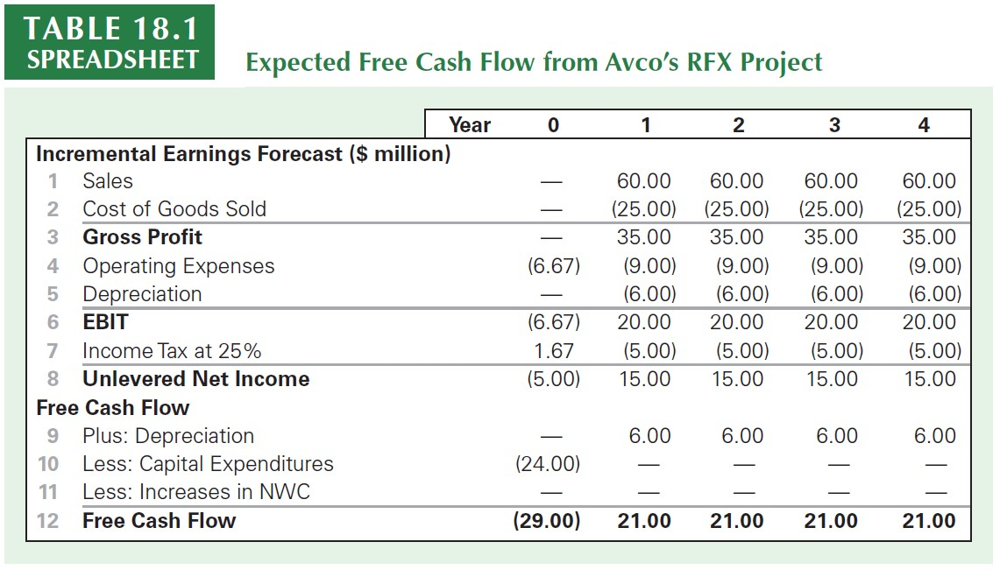
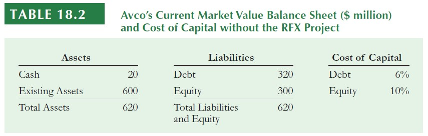
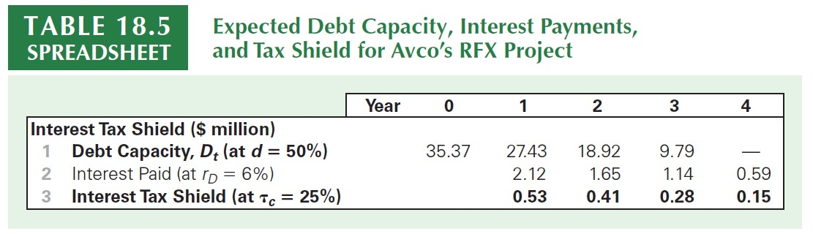
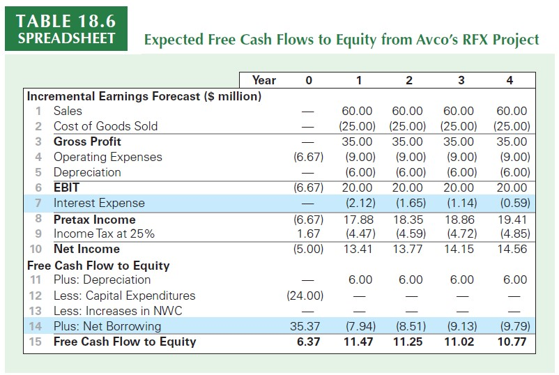

Capital Budgeting and Valuation with Leverage
Revisiting the Free Cash Flow
(+) Revenues
(-) Costs
(-) Depreciation
(=) EBIT
(-) Tax Expenses
(=) Unlevered Net Income
(+) Depreciation
(-) CAPEX
(-) \(\Delta\) NWC
(=) Free Cash Flow
- This is the standard estimate of a Free Cash Flow, which is the amount of incremental cash that a project can actually bring to the firm!
Introducing different Financing Decisions
So far, we’ve assumed that this project was financed only through equity.
How the financing decision of the firm can affect both the cost of capital and the set of cash flows that we ultimately discount?
In this lecture, we’ll revisit the three main methods that can consider leverage decisions and market imperfections:
- The Weighted-Average Cost of Capital (WACC) method
- The Adjusted Present Value (APV) method
- The flow-to-equity (FTE) method
While their details differ, when appropriately applied each method produces the same estimate of an investment’s (or firm’s) value
Underlying assumptions
To illustrate these methods most clearly, we begin the chapter by applying each method to a single example in which we have made a number of simplifying assumptions:
The project has average risk: in essence, the market risk of the project is equivalent to the average market risk of the firm’s investments. In that case, the project’s cost of capital can be assessed based on the risk of the firm.
The firm’s debt-equity ratio is constant: we consider a firm that adjusts its leverage to maintain a constant debt-equity ratio in terms of market values.
Corporate taxes are the only imperfection: we assume that the main effect of leverage on valuation is due to the corporate tax shield. Other effects, such as issuance costs, personal costs, and bankruptcy costs, are abstracted away
While these assumptions are restrictive, they are also a reasonable approximation for many projects and firms
Method #1: the WACC
Recall that our definition of free cash flow measures the after-tax cash flow of a project before regardless how it is financed
In a perfect capital markets, choosing debt of equity shouldn’t change the value of the firm. However, because interest expenses are tax deductible, leverage reduces the firm’s total tax liability, enhancing its value!
We can directly incorporate market imperfections using the WACC method:
\[ r_{\text{WACC}}=\underbrace{\dfrac{E}{D+E}}_{\text{% of Equity}}\times r_e+ \underbrace{\dfrac{D}{D+E}}_{\text{% of Debt}}\times r_{D}\times (1-\tau) \]
where \(E\) is the market-value of Equity, \(D\) is the market-value of debt, \(r_e\) is the cost of equity, \(r_d\) is the cost of debt, and \(\tau\) is the marginal tax rate
Method #1: the WACC (continued)
- Because the WACC incorporates the tax savings from debt, we can compute the levered value of an investment by looking at its stream of cash flows discounted by \(r_{\text{WACC}}\):
\[ V^{L}= \dfrac{FCF_1}{(1+r_{\text{WACC}})}+ \dfrac{FCF_2}{(1+r_{\text{WACC}})^2}+...+\dfrac{FCF_n}{(1+r_{\text{WACC}})^n} \]
- In what follows, we’ll be using an example taken from (Berk and DeMarzo 2023), Chapter 18, to see how the WACC and the other methods can be applied in practice for the RFX project that is being studied by AVCO’s company
Practical Application: WACC

\(\rightarrow\) See accompaining Excel document for the calculations
Practical Application: WACC (continued)
As said before, we’ll be assuming that the market risk of the RFX project is expected to be similar to that for the company’s other lines of business
Because of that, we can use Avco’s equity and debt to determine the weighted average cost of capital for the new project:

\(\rightarrow\) Important: because market values reflect the true economic claim of each type of financing, while calculating the WACC, market value weights for each financing element (equity, debt, etc.) must be used, and not historical, book values
Practical Application: WACC (continued)
- Using our example, we can calculate the WACC as1:
\[ \small r_{\text{WACC}}=\underbrace{\dfrac{300}{300+300}}_{\text{% of Equity}}\times 10\%+ \underbrace{\dfrac{300}{300+300}}_{\text{% of Debt}}\times 6\%\times (1-25\%)=7.25\% \]
- Now, using \(\small r_{\text{WACC}}=7.25\%\), we can calculate the value of the project, including the tax shield from debt, by calculating the present value of its future free cash flows:
\[ \small V^{L}=\sum_{T=1}^{T=4}\dfrac{21}{(1+7.25\%)^t}=70.73 \]
- Because the investment in \(\small t=0\) is \(\small 29\), NPV is \(\small 70.73-29=\$41.73\) million.
General thoughts on the WACC method
This is the method that is most commonly used in practice for capital budgeting purposes
After calculating \(r_{\text{WACC}}\), the rate can then be used throughout the firm assuming that:
- This rate represents the company-wide cost of capital for new investments that are of comparable risk to the rest of the firm
- Pursuing the project will not alter the firm’s debt-equity ratio
Question: how to ensure that the Debt-to-Equity will remain constant when implementing new projects?
Thus far, we have simply assumed the firm adopted a policy of keeping its debt-equity ratio constant. An important advantage of the WACC method is that you do not need to know how this leverage policy is implemented in order to make the capital budgeting decision
Nevertheless, keeping the Debt-to-Equity ratio constant has implications for how the firm’s total debt will change with new investment - we’ll refer to this as Debt-Capacity
Debt Capacity
- Debt Capacity refers to the the amount of debt that a firm needs to raise in order to keep its debt-to-equity ratio constant. Why is that important?
WACC is a weighted average based on the proportions of Equity and Debt
Because of that, any changes in these proportions affect the WACC
Therefore, after calculating \(r_\text{WACC}\), to ensure that you can use it over the years, you need to ensure that the firm maintains the same debt-to-equity ratio
- You can find the the debt capacity for a given period \(t\) by:
\[ D_t=d\times V^L_t \]
Where \(d\) is the debt-to-value ratio, which is the proportion of (market-value) debt over the market value of the firm or project (debt + equity)
Debt Capacity
- You can estimate the value of the levered firm, \(V^L_t\), over each period \(t\) by summing up the discounted stream of cash-flows remaining:
\[ V^L_t=\dfrac{FCF_{t+1}+V^L_{t+1}}{(1+r_{\text{WACC}})} \] where \(V^L_{t+1}\) refers to the continuation value – see the accompanying Excel spreadsheet for a comprehensive example
- While the WACC does not require you to know exactly the debt capacity of the project, this component is essential when calculating the value of the project using other methods, such as the APV, as we’ll see in the next set of slides
The APV Adjusted Present Value (APV) method
Our previous method estimated the value of a levered firm, \(\small V^L\), by considering the interest-tax shields into the cost of capital calculation, \(r_{\text{WACC}}\)
What if we wanted to gauge the impact of the interest tax-shields separately from the actual value of the unlevered project?
The Adjusted Present Value (APV) method does it so by calculating two components: \(V^U\), which is the present value of the unlevered project (i.e, no debt) and the present value of the interest tax-shields stemming from the financing decision:
\[ \small V^{L}_{APV}=V^U+ PV(\text{Interest Tax Shield}) \]
- The APV method incorporates the value of the interest tax shield directly, rather than by adjusting the discount rate as in the WACC method
The APV method in practice
The first step in the APV method is to calculate the value of these free cash flows using the project’s cost of capital if it were financed without leverage \(\rightarrow V^U\)
What is the project’s unlevered cost of capital?
Because the RFX project has similar risk to Avco’s other investments, its unlevered cost of capital is the same as for the firm as a whole
We can calculate the unlevered cost of capital using Avco’s pre-tax WACC, the average return the firm’s investors expect to earn
\[ r_U = \dfrac{E}{E+D}\times r_e + \dfrac{D}{E+D}\times r_d=\text{Pre-Tax WACC} \]
- Note that this formula is the same as of the \(r_{WACC}\), but we’re not including the tax-shield effect, \((1-\tau)\), into account!
The APV method in practice (continued)
To understand why the firm’s unlevered cost of capital equals its pre-tax WACC, note that the pre-tax WACC represents investors’ required return for holding the entire business (equity and debt)
So long as the firm’s leverage choice does not change the overall risk of the firm, the pre-tax WACC must be the same whether the firm is levered or unlevered!
Applying it to our case, we have:
\[ r_U = 0.5\times 10\% + 0.5\times 6\% = 8\% \]
- With that, our estimate for \(V^U\) is:
\[ \small V^{U}=\sum_{T=1}^{T=4}\dfrac{21}{(1+8\%)^t}=69.55 \]
The APV method in practice (continued)
The value of the unlevered project, \(V^U\), does not include the value of the tax shield provided by the interest payments on debt
Knowing the project’s debt capacity for the future, we can explicitly calculate the the present value of the interest tax-shields. First, determine the amount of interest expenses at each period \(t\):
\[ \small \text{Interest Expenses}_t= r_D\times D_{t-1} \]
- After that, assuming a corporate tax rate of \(\tau\), the interest tax-shield is just:
\[ \small \text{Interest Tax-Shield}= \text{Interest Expenses}_t\times \tau \]
The APV method in practice (continued)

To compute the present value of the interest tax shield, we need to determine the appropriate cost of capital. Which rate shall we use? Note that:
- If the project does well, its value will be higher \(\rightarrow\) more debt \(\rightarrow\) more interest tax-shield
- If the project performs poorly, its value will be lower \(\rightarrow\) less debt \(\rightarrow\) less interest tax-shield
Because the interest tax-shield fluctuates with the risk of the project, we should discount it using the same same, \(r_U\)!
The APV method in practice (continued)
- Using \(\small r_U=8\%\) and evaluating the present value of the interest tax-shield, we have:
\[ \small PV(\text{Interest Tax-Shield})=\dfrac{0.53}{(1+8\%)}+\dfrac{0.41}{(1+8\%)^2}+\dfrac{0.28}{(1+8\%)^3}+\dfrac{0.15}{(1+8\%)^4}=1.18 \]
- Now, to determine the value of the levered firm, \(V^L\), we add the value of the interest tax shield to the unlevered value of the project:
\[ \small V^L=V^U+PV(\text{Interest Tax-Shield})= 69.55+1.18=70.73 \]
- Which is exactly the same value that we’ve found using the WACC method!
General thoughts on the APV method
In the APV method, we separately calculated the value of the unlevered firm and the value stemming from the tax-shields
In this case, the APV method is more complicated than the WACC method because we must compute two separate valuations
Notwithstanding, the APV method has some advantages:
It can be easier to apply than the WACC method when the firm does not maintain a constant debt-equity ratio
It also provides managers with an explicit valuation of the tax shield itself
There could be cases where the value of the project heavily depends on the tax-shield, and not on the operating gains themselves \(\rightarrow\) if taxes change, the value of the project may be severely affected!
Exercise: APV
Consider again Avco’s acquisition from previous examples. The acquisition will contribute \(\small \$4.25\) million in free cash flows the first year, which will grow by \(\small 3\%\) per year thereafter. The acquisition cost of \(\small \$80\) million will be financed with \(\small \$50\) million in new debt initially. Compute the value of the acquisition using the APV method, assuming Avco will maintain a constant debt-equity ratio for the acquisition.
\(\rightarrow\) Taken from (Berk and DeMarzo 2023), p. 689
Solution Rationale: proceed in the following steps to compute the value using the APV method:
- Calculate \(V^U\) - the value of the unlevered project
- Calculate the present value of the tax-shields
- Sum them up
- Note that, because the project will grow at a \(\small3\%\) rate, debt capacity will also grow at the same rate. Therefore, the growth-rate of the interest tax-shield is also \(\small3\%\)
Exercise: APV
- Calculating \(V^U\): this is just the value of a growing perpetuity for the unlevered cash-flows:
\[ \small V^U= \dfrac{FCFC}{r-g}=\dfrac{4.25}{8\%-3\%}= 85 \]
- Now, if the firm will start with \(\small\$50\) million in debt, interest expenses are \(\small 50\times6\%=3\) million. The present value of the interest tax-shield is:
\[ \small \dfrac{25\%\times 3}{8\%-3\%}=\dfrac{0.75}{5\%}=15 \]
- Therefore, \(\small V^L=V^U+PV(\text{Tax-Shield})=85+15=100\)
The Flow-to-Equity (FTE) Method
In the WACC and APV methods, we value a project based on its free cash flow, which is computed ignoring interest and debt payments
What if we take these into consideration and value the cash flows that pertain only to shareholders? The Flow to Equity method does this by:
Explicitly calculating the free cash flow available to equity holders after taking into account all payments to and from debt holders
The cashflow to equity holders are then discounted using the equity cost of capital
Despite this difference in implementation, the FTE method produces the same assessment of the project’s value as the WACC or APV methods
The Flow-to-Equity (FTE) Method, continued
- In order to implement the FTE method, we need to compute the Free Cash Flow to Equity (FCFE), which shows the available proceeds for the shareholders of the firm after paying out all costs, considering all working capital and CAPEX investments, deducting interest expenses and considering the firm’s net borrowing activity:
\[ \small FCFE = FCF - (1-\tau)\times (\text{Interest Expenses})\pm \text{Net Borrowing} \]
Compared to our previous case, there will be two differences:
- First, we deduct interest expenses before calculating taxes
- We add the proceeds from the firm’s net borrowing activity.
- These will be positive when the firm increases its net debt
- On the other hand, these will be negative when the firm reduces its net debt
Previous Estimation of Free Cash Flow (for WACC and APV)

Estimation of Free Cash Flow to Equity

\(\rightarrow\) See accompaining Excel document for the calculations
Estimation of Free Cash Flow to Equity, explanation
From the previous table, you can see that we have made two major changes relative to our regular Free Cash Flow estimation:
We explicitly included interest expenses - as calculated in our previous class - before calculating taxes. As a consequence, our taxable income was lower, and so does the tax expense for each year
Because we’re measuring the cash flows to equity holders and not all the claimants of the firm, we need to include all dynamics in debt levels (inclusions or deductions). We can do it by considering changes in debt levels from one period to the other:
\[ \small \text{Net Borrowing}_t= Debt_t-Debt_{t-1} \]
- As we did in our previous class when calculating the amount of necessary Debt that the firm needed in order to keep the debt-to-equity ratio constant, we can use the calculated debt capacity to calculate the increases/decreases in net debt for each period
Valuing Equity Cash Flows
You now have the cash flows that pertain exclusively to the shareholders of the firm. Now what?
The project’s free cash flow to equity shows the expected amount of additional cash the firm will have available to pay dividends (or conduct share repurchases) each year
Because these cash flows represent payments to equity holders, they should be discounted at the project’s equity cost of capital.
Given that the risk and leverage of the RFX project are the same as for Avco overall, we can use Avco’s equity cost of capital of (\(r_e=10\%\)):
\[ \small NPV(FCFE)=6.37 + \dfrac{11.47}{1.10}+ \dfrac{11.25}{1.10^2} +\dfrac{11.02}{1.10^3}+ \dfrac{10.77}{1.10^4}=41.73 \]
… which yields exactly the same NPV as of the previous methods!
Overall thoughts on the FTE method
Steps to compute the value using the FTE method:
- Compute the Free Cash Flow to Equity by directly including interest expenses and net debt
- Calculate the project’s cost of equity, \(r_e\)
- Discount the cash flows using \(r_e\)
Applying the FTE method was simplified in our example because the project’s risk and leverage matched the firm’s, and the firm’s equity cost of capital was expected to remain constant.
Just as with the WACC, however, this assumption is reasonable only if the firm maintains a constant debt-equity ratio. If the debt-equity ratio changes over time, the risk of equity—and, therefore, its cost of capital—will change as well
Overall thoughts on the FTE method, continued
Limitations: the FTE method carries the same limitations as of the APV method: we need to compute the project’s debt capacity to determine interest and net borrowing before we can make the capital budgeting decision. Because of that, the WACC method is easier to apply
Benefits: whenever we have a complex capital structure, using the FTE has some advantages over the other two methods:
The APV and WACC methods estimate the the firm’s enterprise value, and need a separate valuation of the other components to separate the value of equity
In constrast, the FTE method can be used to estimate the equity value directly
Finally, by emphasizing a project’s implications for the firm’s payouts to equity, the FTE method may be viewed as a more transparent method for discussing a project’s benefit to shareholders—a managerial concern.
Project’s Based Cost of Capital
We began the last class with three simplifying assumptions:
The project has average risk: in essence, the market risk of the project is equivalent to the average market risk of the firm’s investments. In that case, the project’s cost of capital can be assessed based on the risk of the firm.
The firm’s debt-equity ratio is constant: we consider a firm that adjusts its leverage to maintain a constant debt-equity ratio in terms of market values.
Corporate taxes are the only imperfection: we assume that the main effect of leverage on valuation is due to the corporate tax shield. Other effects, such as issuance costs, personal costs, and bankruptcy costs, are abstracted away
Question: what if we now relax Assumptions 1 and 2?
Project’s Based Cost of Capital
Relaxing hypothesis about the project’s risk and leverage does have a lot of practical relevance:
Specific projects often differ from the average investment made by the firm \(\rightarrow\) different risks
Furthermore, acquisitions of real estate or capital equipment are often highly levered, whereas investments in intellectual property are not. Thus, depending on the specific investment being made, the leverage policy used may differ substantially from the firm’s average leverage policy
To take differences in the project relative to the average firm’s risk and leverage, we proceed by:
- Estimating \(r_U\), the unlevered cost of capital, based on a sample of comparable projects;
- (Re)lever the result based on the specific leverage policy adopted
Step 1: Project’s Based Cost of Capital
The first step involves estimating \(r_U\) not based on the firm’s unlevered cost of capital, but rather a set of comparable projects that share similar risks. Suppose that our project relates to a new plastics manufacturing division that faces different market risks than the firm’s main packaging business.
We can estimate \(r_U\) for the plastics division by looking at other single-division plastics firms that have similar business risks. For example, suppose two firms are comparable to the plastics division and have the following characteristics:
| Firm | Equity Cost of Capital | Debt Cost of Capital | D/(D+E) |
|---|---|---|---|
| 1 | 12% | 6% | 40% |
| 2 | 10.7% | 5.5% | 25% |
Step 1: Project’s Based Cost of Capital
| Firm | Equity Cost of Capital | Debt Cost of Capital | D/(D+E) |
|---|---|---|---|
| 1 | 12% | 6% | 40% |
| 2 | 10.7% | 5.5% | 25% |
Based on this, we calculate each firm’s \(r_U\) and get the average:
\(\small r_U^1= 0.6 \times 12\% + 0.4 \times 6\% = 9.6\%\)
\(\small r_U^2= 0.75 \times 10.7\% + 0.25 \times 5.5\% = 9.4\%\)In this way, a reasonable estimate for \(r_U\) of our project is around \(\small 9.5\%\). If we wanted to use the APV approach to calculate the value of the project, we could use this estimate.
If we wanted to use the WACC or FTE methods, however, we need to estimate \(r_E\), which will depend on the incremental debt the firm will take on as a result of the project
Step 2: Project’s Based Cost of Capital
- Recall that our expression for the unlevered cost of capital, \(r_U\), was:
\[ \small r_U= \dfrac{E}{E+D}\times r_E + \dfrac{D}{E+D}\times r_D \]
- Rearranging terms, we have:
\[ \small \dfrac{E}{E+D}\times r_E = r_U - \dfrac{D}{E+D}\times r_D \\ \small r_E=\dfrac{E+D}{E}\times r_U - \dfrac{D}{E}\times r_D \\ \small r_E = r_U+ \dfrac{D}{E}\times r_U - \dfrac{D}{E}\times r_D \\ \small r_E = r_U+ \dfrac{D}{E}( r_U - r_D) \]
Step 2: Project’s Based Cost of Capital
- Our last equation shows us that:
\[ \small r_E = r_U+ \dfrac{D}{E}( r_U - r_D) \]
In words, the project’s cost of capital depends on:
- The unlevered cost of capital, \(r_U\)
- The specific debt-to-equity ratio that the project will use
Suppose that the firm will use a debt-to-equity ratio of 1, and the cost of debt remains at 6%. Then, we can calculate \(r_E\) as:
\[ \small r_E = 9.5\% + \dfrac{0.5}{0.5}(9.5\% - 6\%) = 13\% \]
Step 2: Project’s Based Cost of Capital
- We can use this estimate of \(r_E\) to estimate the project’s WACC, assuming that the tax-rate if 25%:
\[ \small r_{\text{WACC}}=50\% \times 13\% + 50\% \times 6\% \times(1-25\%)= 8.75\% \]
Based on these estimates, Avco should use a WACC of 8.75% for the plastics division, compared to the WACC of 7.25% that has been previously estimated based on the firm’s overall
Intuition: because the project had a higher unlevered risk (9.5% vs. 8%), after applying the adopted leverage policy, will also have a higher cost of capital. Using the previous formulas, you could also reach the project’s WACC without estimating \(r_E\):
\[ \small r_\text{WACC} = r_U-D\times\tau\times r_D= 9.5\% - 50\%\times 25\% \times 0.06= 8.75\% \]
Common misconception: determining the Incremental Leverage of a project
To determine the equity or weighted average cost of capital for a project, we need to know the amount of debt to associate with the project
How to determine the correct \(\small D/(D+E)\) ratio to use in our estimations?
Suppose a project involves buying a new warehouse, and the purchase of the warehouse is financed with a mortgage for 90% of its value.
However, if the firm has an overall policy to maintain a 40% debt-to-value ratio, it will reduce debt elsewhere in the firm once the warehouse is purchased in an effort to maintain that ratio.
\(\rightarrow\) In that case, the appropriate debt-to-value ratio to use when evaluating the warehouse project is 40%, not 90%! For capital budgeting purposes, the project’s financing is the change in the firm’s total debt (net of cash) with the project versus without the project!
Common misconception: (re)levering the WACC
- Suppose that a firm has a debt-to-value ratio of 25%, a debt cost of capital of 5.33%, an equity cost of capital of 12%, and a tax rate of 25%. The current WACC is
\[ \small r_{\text{WACC}}=0.75 \times 12\% + 0.25\times 5.33\% \times (1- 25\%) = 10\% \]
- What happens to WACC if the firm increases its debt-to-value ratio to 50%? It is tempting to do:
\[ \small r_{\text{WACC}}=0.5 \times 12\% + 0.5\times 5.33\% \times (1- 25\%) = 8\% \]
- Note, however, that this is wrong, because we’re keeping \(r_E\) and \(r_D\) fixed! Since these are the cost of equity and debt, we should expect these to increase with leverage, as the risk of both shareholders and debt holders increase!
Common misconception: (re)levering the WACC
- When the firm increases leverage, the risk of its equity and debt will increase, increasing \(\small r_E\) and \(\small r_D\)! To compute the new WACC correctly, we must first determine the firm’s unlevered cost of capital:
\[ \small r_U = 0.75 \times 12\% + 0.25\times 5.33\% = 10.33\% \]
- If \(r_D\) has risen to \(6.67\%\) with the change in leverage, then:
\[ \small r_E = 10.33\% + \dfrac{0.5}{0.5}\times(10.33\%-6.67\%)=14\% \]
- Finally, the correct new WACC is:
\[ \small r_{\text{WACC}}=0.5 \times 14\% + 0.5\times 6.67\% \times (1- 25\%) = 9.5\% \]
Comparing the three methods
We saw how we could value a project’s cash flows using three methods:
- The Weigthed Average Cost of Capital (WACC) method
- The Adjusted Present Value (APV) method
- The Flow-to-Equity (FTE) method
Starting from the same assumptions, all methods yield the same results. However:
WACC is the method that is the easiest to use when the firm will maintain a fixed debt-to-value ratio over the life of the investment
For alternative leverage policies, the APV method is usually the most straightforward approach.
The FTE method is typically used only in complicated settings for which the values of other securities in the firm’s capital structure or the interest tax shield are themselves difficult to determine
Other Effects of Financing
- Previously, we assumed that:
Corporate taxes are the only imperfection: we assume that the main effect of leverage on valuation is due to the corporate tax shield. Other effects, such as issuance costs, personal costs, and bankruptcy costs, are abstracted away
- The three methods that we saw determine the value of an investment incorporating the tax shields associated with leverage. What if we have more than one market imperfection?
- Issuing Costs
- Security Mispricing
- Financial Distress and Bankruptcy Costs
- In what follows, we’ll investigate how to adjust for these three potential imperfections
Other Effects of Financing: Issuing Costs
When a firm takes out a loan or raises capital by issuing securities, the banks that provide the loan or underwrite the sale of the securities charge fees
The fees associated with the financing of the project are a cost that should be included as part of the project’s required investment, reducing the NPV of the project
\[ NPV = V^L - \text{Investment} - \text{Issuance Costs} \]
- This calculation presumes the cash flows generated by the project will be paid out. If instead they will be reinvested in a new project, and thereby save future issuance costs, the present value of these savings should also be incorporated and will offset the current issuance costs.
Other Effects of Financing: Security Mispricing
With perfect capital markets, all securities are fairly priced and issuing securities is a zero-NPV transaction. However, there are situations where the pricing is more (or less) relative to the true value!
Equity mispricing: if management believes that the equity will sell at a price that is less than its true value, this mispricing is a cost of the project for the existing shareholders. It can be deducted from the project NPV in addition to other issuance costs
Loan mispricing: a firm may pay an interest rate that is too high if news that would improve its credit rating has not yet become public
With the WACC, we could adjust it using the higher interest rate
With the APV, we must add to the value of the project the NPV of the loan cash flows when evaluated at the “correct” rate that corresponds to their actual risk
Other Effects of Financing: Financial Distress
One consequence of debt financing is the possibility of financial distress and agency costs:
When the debt level—and, therefore, the probability of financial distress—is high, the expected free cash flow will be reduced by the expected costs associated with financial distress and agency problems
Financial distress costs therefore tend to increase the sensitivity of the firm’s value to market risk, further raising the cost of capital for highly levered firms
How to adjust for potential financial distress and agency costs?
One approach is to adjust our free cash flow estimates to account for the costs, and increased risk, resulting from financial distress
An alternative method is to first value the project ignoring these costs, and then add the present value of the incremental cash flows associated with financial distress and agency problems separately
Supplementary Reading
- See Note on Cash Flow Valuation Methods: Comparison of WACC, FTE, CCF and APV Approaches (910N31) for a detailed discussion on the valuation methods
\(\rightarrow\) All contents are available on eClass®.